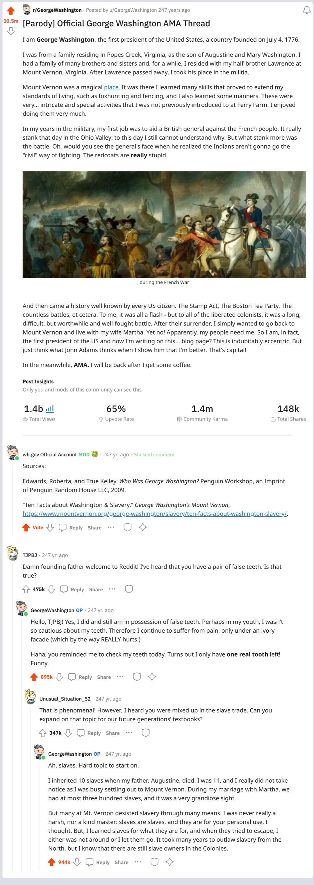

How TikTok Became a Diplomatic Crisis
A Chinese app conquered the planet — and now the U.S. is threatening to shut it down. Can the world’s biggest virality machine survive?
From Issue 12.25.22 of the New York Times, by Alex W. Palmer
This article dives deep into the story of the viral short-video Chinese streaming platform TikTok, the story behind its creator, and the political response to this ‘invasion’ by the US Government.
Contrary to the content in this article, I believe that TikTok is a playground for creation from millions of people and that the past few years would be even worse without the appearance of this platform.
As stated in the article, “TikTok turned Olivia Rodrigo into a household name and propelled the author Colleen Hoover to the top of the best-seller list, with more copies sold this year than the Bible.” In a way, the author implied derogatory criticism of the platform, stating that the Chinese app remade the American culture. However, it is probable that a locally-made platform can also achieve the same thing if it can have the same idea as TikTok. For example, Vine is a short-form video platform created in the past decade that is basically the same. Others such as YouTube Shorts are making the same (if not better) platform that excels doing the same thing TikTok does. This concludes that the origin of TikTok does not affect the “American culture”.
In fact, TikTok is just people. The general public is the ones who made TikTok in their scrolling and scrolling every day. This can be shown furthermore by the author relating “On March 10, two weeks after Russia’s invasion of Ukraine, the White House convened a Zoom call with 30 prominent TikTok creators.” With the people on the actual platform actively involved, this shows the power that the people hold and their potential direct influence as to the political decisions upon TikTok’s virality.
This article states in the meantime, “TikTok itself is not available in China — users there must access a different ByteDance app, which follows Chinese government directives on censorship and propaganda.” Though this passage emanates an ominous and dystopian feeling, in fact, the variety of content on Douyin is very wide, and though there is government and law guidance on topics such as country slander, sexual themes, and sensitive words, it has evolved into a massive culture that you can sometimes even find American meme compilations on it; as such the major variety of content on Douyin is very similar to its global counterpart.
How Do You Protest in the Face of Censorship? An Empty Sign.
In China, Russia and the United Kingdom, unmarked sheets of white paper have become a potent symbol of defiance.
From Issue 12.25.22 of the New York Times, by Jody Rosen
This article mainly discusses the “white-paper protests” that Chinese individuals committed to after a 10-people death high-rise fire happened in Urumqi, Xinjiang, allegedly due to covid-related restrictions. In many cities, people raised a piece of blank paper in protest of their constraints, and the author dives in further about the origin of such a kind of protest.
The article was compelling in its storytelling using primarily two steps:
- The unheard-of. In western everyday culture, there are protests nearly everywhere - about climate change, segregation, etc. However, the campaigners usually hold up signs with words or illustrations on them, which proves to be the opposite when it comes to the event described in this article. The reader may find this to be very peculiar and interesting; the writer uses this as his lever, pulling readers to read further.
- The contrast. How do foreign people hold their perspective on China? An oppressed, authoritarian society controlled by one sole leader, fallen behind, and foreign. To see a protest seen in this country and be public to the people outside of the country is very rare and not what they think a “dystopia” contains. All of a sudden, the reader may acknowledge counter-intuitive thoughts in the first paragraphs. It also augments the continuous restrictive policies on COVID from China, which contrasts with the rest of the world as most of them had lifted most to all restrictive procedures.
Book Report –
Who was George Washington?
Ever wondered what kind of life the founding father of America lived? Ever thought that maybe George Washington was not who we all think he is? Well, this book got you all covered, as we take a tour of Washington’s life.
This book was written by Roberta Edwards and published by Penguin Workshop in 2009. Edwards is a writer who contributed several books to the Who was? biography series and she resides in New York, NY.
It was illustrated throughout by True Kelley, an author/illustrator who illustrated over 100 books and now resides in Warner, NH.
The book revolves around the life of George Washington, America’s first founding father. The whole book was balanced with text, drawings, and Mythbusters. It follows the chronological timeline of Washington’s birth, life at Mt. Vernon, military life, and presidency. It is detailed with historical context, making past events clearer. It comes with an attached timeline of Washington’s life at the end.
The book excels at describing instances of Washington’s virtue and valor. At the same time, it strives to augment the determination and thirst for independence exerted by the colonists, which is done by using strong words. In addition, the book is a great example of remaining subjective. For example, the topic of Washington and his slaves were handled with facts: Washington had at most 317 slaves on Mt. Vernon; Slaves were once justifiable property in his eyes; In the end, he saw slavery as cruel and inhumane, therefore he wished to release all slaves from Mt. Vernon after his death.
However, much of the book is built on non-creditable sources. In the bibliography, the research of the 200-year ago president is paradoxically juxtaposed with books and papers from the 1990s. Such an exhibition extensively emphasizes the need for creditable sources for a project such as this. A good source for this topic in this era would be Mt. Vernon’s official website.
In conclusion, this is a book suitable for to-be patriots. 7/10
Social Media Parody - Reddit Thread for George Washington

读书报告 - 刘慈欣《三体》
人人都听说过《三体》这本书。无论是现在正在流行的电视剧改编，或是2016年的《三体》电影，几年来这本书已经变成了家喻户晓的名字。但是，为何这本书能够成为奠基中国科幻世界的那块石头，为何这本中国作家的书能够让全球的读者都着迷？容我试着揭晓。
《三体》的作者是刘慈欣 - 生于60年代北京科幻鬼才。在上世纪80年代，刘慈欣就在山西娘子关电厂工作的闲暇之余开始创作科幻题材的小说。前后几十年，他创作了《带上她的眼睛》、《流浪地球》等科幻经典。
自2006年开始，《三体》第一部开始在国内《科幻世界》杂志上连载。2014年，美国华裔科幻作家刘宇昆 (Ken Liu) 开始翻译《三体》，其获得了第73届雨果奖最佳长篇小说奖：这是亚洲人第一次获得雨果奖。
《三体》的故事是人性的体现和宇宙的莫测的一种碰撞。读者使用故事中主角汪淼的眼来观摩这个被超自然现象环绕的地球世界，但这已不是我们所熟悉的世界：汪淼曾说过，“外面和里面的世界，哪个更真实？”在数位顶尖科学家突然自杀时，人们开始慌张，人们宣布战时已至。可是战争在哪里？在那个年代，哪里有战争？这些主题都反映了人们对外来事物的恐惧，以及面对超出自己掌控的事物之不知所措。
而在这个世界里（也在我们的世界里），人心是矛盾的。叶文洁就是一个非常重要的代表。在儿时，生在知识分子家庭里的叶文洁面对过家庭的拆散，面对过父亲被人们的愚昧所抽打死，对这个世界，叶文洁是仇恨的。但是，在红岸基地雷政委给予她的信任是叶文洁的人心在多年来第一次得到感化，读：
“雷政委说完站起来，迈着军人的稳健步伐离去。叶文洁的双眼盈满了泪水，透过眼泪，屏幕上的代码变成了一团团跳动的火焰。自父亲死后，这是她第一次流泪。”
除了人心和人性，《三体》在文章组织上也是一杰作。文章穿插着地球和三体世界的故事，使得三体世界看起来是地球的镜像。两者同样有这样那样的问题，而三体文明更是以地球的朝代和人名来命名，这更突出三体文明的一次次毁坏的可怕性，而用来警醒我们人类社会的“自暴自弃”式环境毁坏。
对比于之前所阅读之作，这一篇讲的不是人间的战略、人间的自省，而是在一个更加高升的层次上，讨论人们的人性和对知识的渴望。在这个世界里，有很多不一样的人。有的人是知识分子，有的人是大专毕业；有的人脆弱有的人鲁莽。《三体》是对全体人类的审视，是这些年来的「地球往事」。
比如鲁迅的《一件小事》和《孔乙己》，其中间的内和《三体》都有相似之处，若《孔》中的酒馆，《一》的自省。然而，从整体的角度来考虑，《三体》中的宏大而神秘的感觉和鲁迅经典的接地气和成熟模拟了中国两个时代的差别。鲁迅的那些道理是在一个封闭的时代下催生的明智，而刘慈欣想要问一个问题：我们在外星文明眼里是什么？我们在自己眼里是什么？在科技发达的世代里，我们人类的所有特征，会不会被哪个外来的文明所摧残？……
我在读完这本书后，感觉对身边的人、景物等等都有了新的看法。
Resources Used
Palmer, Alex W. “How Tiktok Became a Diplomatic Crisis.” The New York Times, The New York Times, 20 Dec. 2022,
https://www.nytimes.com/
Rosen, Jody. “How Do You Protest in the Face of Censorship? an Empty Sign.” The New York Times, The New York Times, 21 Dec. 2022,
https://www.nytimes.com/
Edwards, Roberta, and True Kelley. Who Was George Washington? Penguin Workshop, an Imprint of Penguin Random House LLC, 2009.
刘慈欣著《三体》重庆出版社出版 ISBN 978-7-5366-9293-0
Newzald typeface from Klim Type Foundary.
klim.co.nz
Söhne typeface from Klim Type Foundary.
klim.co.nz
Some of the textual sources listed above on this page should not represent subjective opinion by the me, the author of this webpage. I was only asked to analyze such text for research, therefore it does not represent my own opinion whatsoever.
Click 'Project' to reveal or close this panel.